CS180 Final Project
For this assignment, I chose to do the pre-canned High Dynamic Range and Light Field Camera projects.
Additionally, I'm not sure what counts as bells & whistles on this assignment, so I've just marked the points where I did something extra with the bell emoji: 🔔
High Dynamic Range
In this project, I learned about the shortcomings of digital photography when it comes to capturing real radiance, and various mathematical techniques to recover and present those radiances.
I implemented techniques described in Debevec 1997
to reconstruct the radiance map of a scene given multiple exposure levels,
and Durand 2002 to use bilateral filtering for tone mapping those radiance maps.
My work follows Brown University's 2012 CS129 Project 5.
Radiance Map Construction
Below are $P$ images with $N$ pixels of the same scene at different levels of exposure, labelled in seconds.
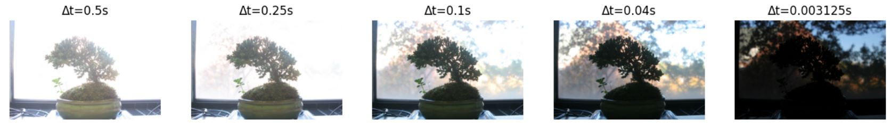
The goal of radiance map construction is to recover the radiance of each pixel $E_{i}$ given the final digital pixels ($Z_{ij}$) and corresponding exposure times $\Delta t$.
Note that $0 \leq i < P$ indexes images, while $0 \leq j < N$ indexes flattened pixels.
To do this, note that $Z_{ij} = f(E_i \Delta t_j)$ for some unknown $f$, and if we allow some $g = \ln f^{-1}$ (the reasons we assume this to be well defined on $0 \leq z \leq 255$ are outlined by Debevec),
then with some algebra we have the relation: $$g(Z_{ij}) = \ln E_i + \ln \Delta t_j$$
Debevec also suggests using some smoothing functions scaled by hyperparameter $\lambda$; namely, penalizing $g''(z) = g(z - 1) + 2g(z) + g(z + 1)$ (because $z$ are discrete),
and also introducing $w(z)$, a weighting function which de-emphasizes pixel values closer to $0$ or $255$.
With all this into account, Debevec presents the objective function:
$$O = \sum_i \sum_j \{w(Z_{ij})[g(Z_{ij}) - \ln E_i - \ln \Delta t_j] \}^2 + \lambda \sum_z [w(z) g''(z)]^2$$
Debevec suggests using $\frac{255}{N(P-1)}$ samples from each exposure level ($255$ is $\max Z - \min Z$) to compute the radiance map.
For computation, we want to transform this into the matrix-vector form $||Ax - b||^2$, where $x$ holds our unknowns. Letting $n = ||$domain$(g)|| = 256$ we construct:
$$A \in \mathbb{R}^{(N \cdot P + n + 1) \times (N + n)},$$
$$\forall {ij} \text{ s.t. } z = Z_{ij}, k = i \cdot P + j: \, A_{k,z} = w(z), A_{k,n+i}=-w(z)$$
$$A_{N \cdot P, 128} = 1 \text{ (midpoint normalization suggested by Debevec)}$$
$$\forall {i} \text{ s.t. } k = N \cdot P + i + 1: A_{k,i} = \lambda w(i), A_{k, i + 1} = -2 \lambda w(i), A{k, i + 2} = \lambda w(i)$$
$$b \in \mathbb{R}^{(N \cdot P + n + 1)}$$
$$\forall {ij} k = i \cdot P + j: b_k = w(Z_{ij}) \Delta t_{j}$$
This makes the objective vector simply:
$$x_{j < n} = g(j), x_{i \geq n} = \ln E_{i - n}$$
which allows us to estimate $g(z)$ over the entire domain $0 \leq z \leq 255$.
This algebra is implictly done by Debevec, I've just explicitly written it out here and I use numpy operations to perform it in Python.
Here is the recovered inverse g plots, specifically plotting exposure value vs. pixel value per R, G, B channel of the above Bonsai tree series:
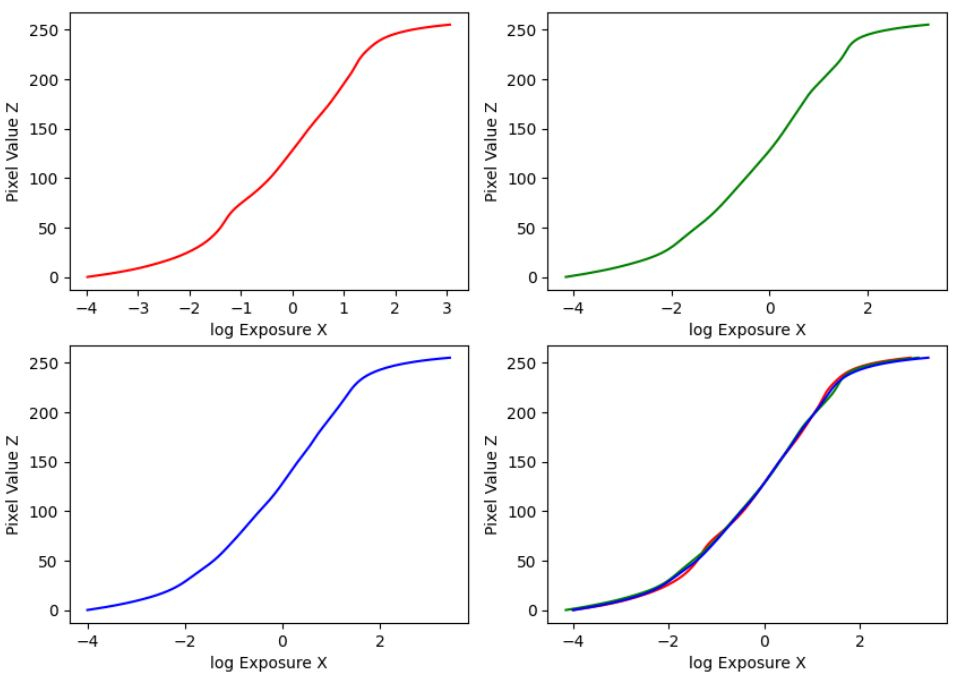
Though the above least squares does also estimate some $E_i$, because we are only sampling a subset of the pixels, we still need to estimate the rest.
Again, Debevec has a suggested equation which takes weighting into account:
$$\ln E_i = \dfrac{\sum_j w(Z_{ij}) (g(Z_{ij} - \ln \Delta t_j))}{\sum_j w(Z_{ij})}$$
(🔔) However, Debevec does not provide a matrix-vector form of this equation, which instead I was able to derive myself:
$$E_i = \exp \frac{w(Z_i) \cdot (g(Z_i) - \log t)}{\sum_j w(Z_i)}$$
where $Z_i \in \mathbb{R}^P$ is the vector $[Z_{i1}, Z_{i2}, \dots, Z_{ij} \, \dots, Z_{i(P-1)}]$; i.e. the same pixel for each photo $j \in $range$(P)$,
$w(Z_i)$ is the weighting function $w$ called element-wise on the vector $Z_i$,
and $t$ is the $j$-long vector where $t_j$ is the exposure time, in seconds, of the $j$th picture.
A matrix-vector form is more efficient for computation as we can use numpy.
For RGB values, we can consider the channels independently and stack them together for the final radiance map.
Anyways, here are my results:
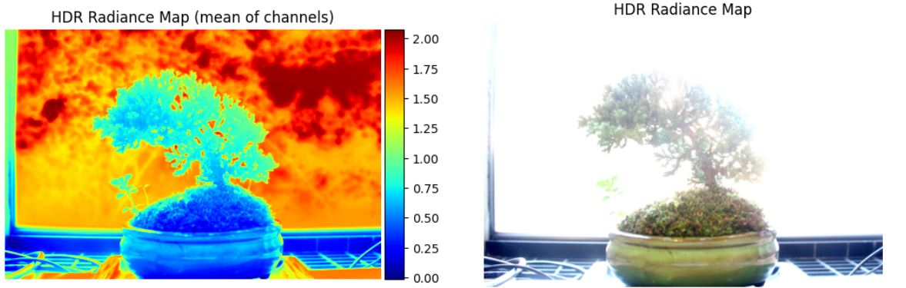
While the radiance map itself is clearly capturing some physical reality, it does not look good without further processing, which is where tone mapping comes in.
Tone Mapping
Tone mapping can be applied to the radiance map to produce desirable results.
"Global Scale" tone mapping is given to us by the project starter code.
I implemented "Global Simple" tone mapping (simply $E' = \dfrac{E}{1 + E}$) and Durand's bilateral filtered tone mapping.
The math in Durand is described in the paper and in the project spec, but in short, we apply bilateral filtering to the log intensity (for each color channel).
The comparative results are below.
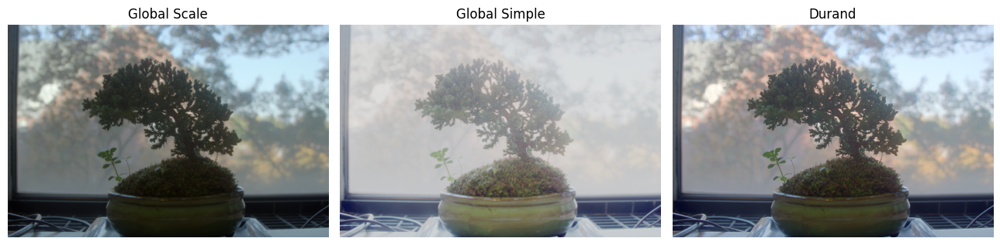
As you can see, the Durand tone mapped result is much more vibrant without compromising any accuracy.
Appyling Global Scale sequentially after Durand also produces slightly more desirable results, bringing out the foreground greens more, in this specific case.
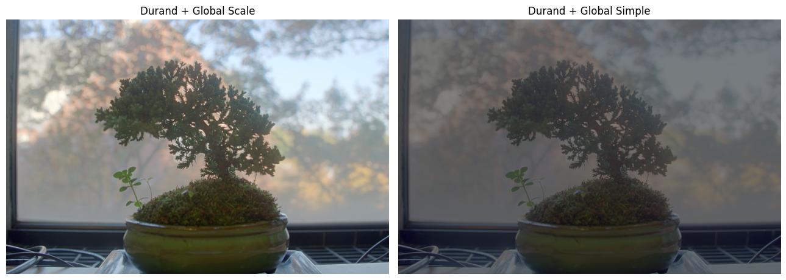
More Results
The above steps performed on some other delta-exposure arrays:
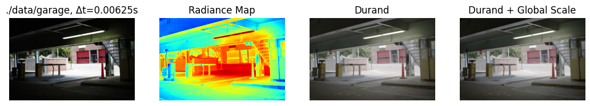
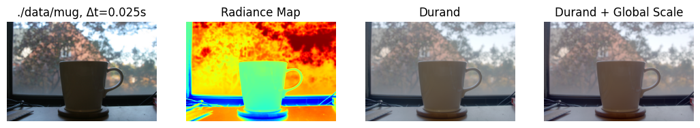
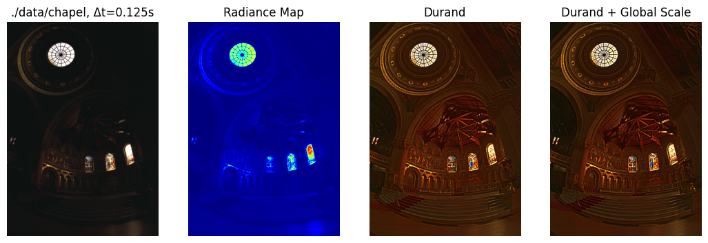
Light Field Camera
In this project, I learned how to take advantage of light fields to synthetically produce optical effects normally produced by mechanisms of the camera (aperture, focus).
I followed this "Depth Refocusing and Aperture Adjustment with Light Field Data" project from 2017 to take advantage of light field data
to produce some interesting optical effects. I will demonstrate my results from the light field data of the chess set.
Depth Refocusing
Light field data consists of many pictures taken from a planar set of discrete $(u, v)$ coordinates.
Averaging over the light field data of the chess set reveals that the parts of the image physically closest to the camera plane are blurry.
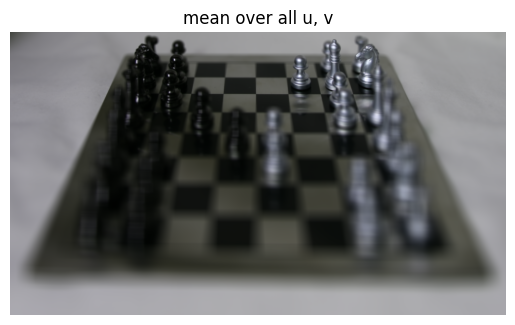
This makes sense, as due to parallax, those parts of the image would shift the most.
However, this observation also leads to the insight that we can simulate focusing at different "depths" by simply artifically shifting the light field images by purposeful amounts.
Note that by shifting, I mean translating an image by some offset $(x, y)$.
Specifically, we consider shifting the image at $(u, v)$ by $(u - c_x, c_y - v)$ where $(c_x, c_y)$ is the centroid; in this case, $(8, 8)$.
For example, here is the image with everything shifted towards the centroid, not shifted, and away from the centroid, respectively.
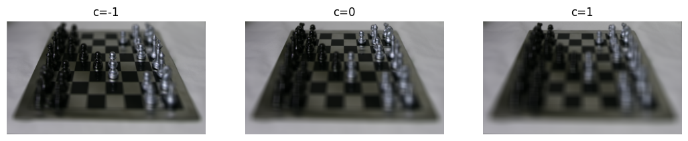
In fact, we can interpolate these shifts by using a scalar $c$ to multiply the shift amount (that's what the $c$ in the above image refers to).
That is, we shift the image at $(u, v)$ by $c \cdot (u - c_x, c_y - v)$ where $c$ is a parameter to control "depth".
Here is a cool gif that demonstrates this, with the pictured bar mapping to $c \in [-1, 1]$:
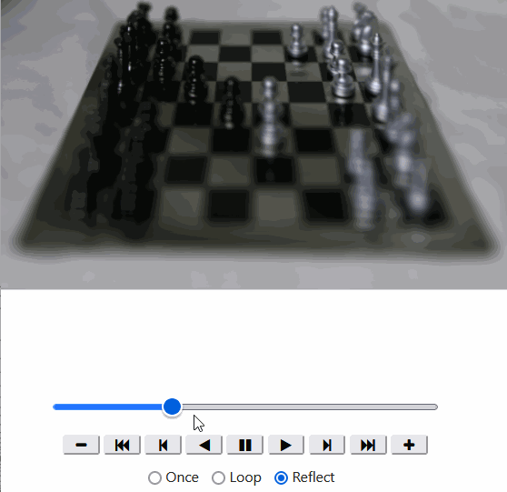
Aperture Adjustment
We can also simulate adjusting the aperture by only considering $(u, v)$ coordinates within a certain radius $r$.
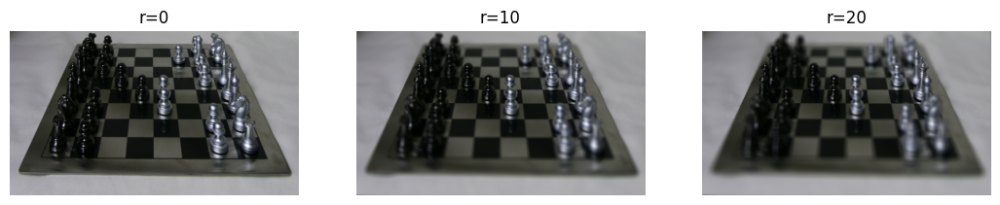
I used $c=-1$ for depth refocusing here, as visually it seemed to capture the center of the image the best.
Here, $r=0$ refers to only the picture at $(8, 8)$.
$r=10$ is the average of all the pictures in the $3 \times 3$ square centered at $(8, 8)$.
Just like before, we can interpolate through $r$, here, I'm interpolating through $r \in [0, 20]$; the $(u, v)$ grid only has $(u, v) \in [0, 17] \times [0, 17]$, so any larger $r$ would have no effect.
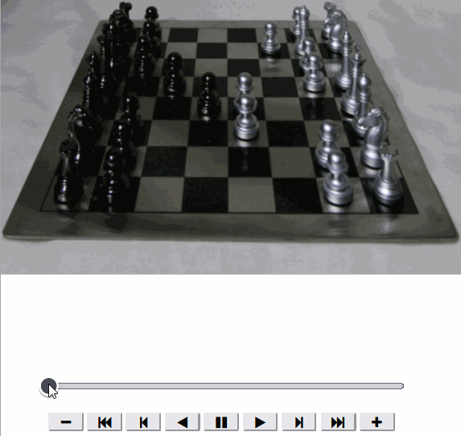
(🔔) Interactive Refocusing
We can also try refocusing on specific points, which is similar to novel features in some modern photo applications.
To do this, we can simply search through some $c \in [0, 1]$ and pick the $c$ for refocusing that maximizes normalized cross-correlation in a "patch"
around our target point.
One speedup that is easy to implement is that we only need to apply the refocusing algorithm to a small patch around the target patch when searching,
as refocusing seems to be the most computationally expensive step.
The results are below:
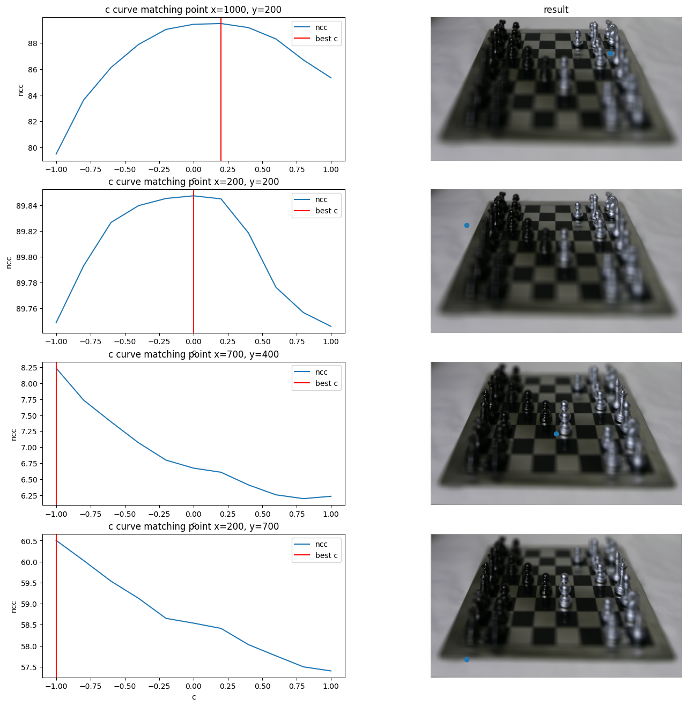
The left-hand column plots the NCC-curve versus each choice of $c$.
Higher means better local match.
On the right we see the refocused image corresponding to the best $c$;
I've also labelled the target point on the resulting images.
The more "extreme" points chosen don't perform that well as none of the $c \in [-1, 1]$ focus on them,
but the points near the middle show strong results.
It's interesting to note that all the curves are concave, so many speed-ups are implementable;
but I will leave that to future students as sadly I've run out of time to work on this.